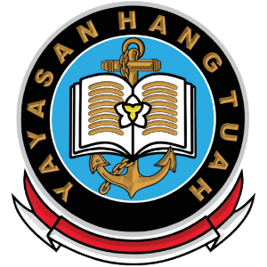
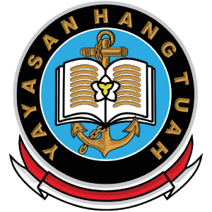
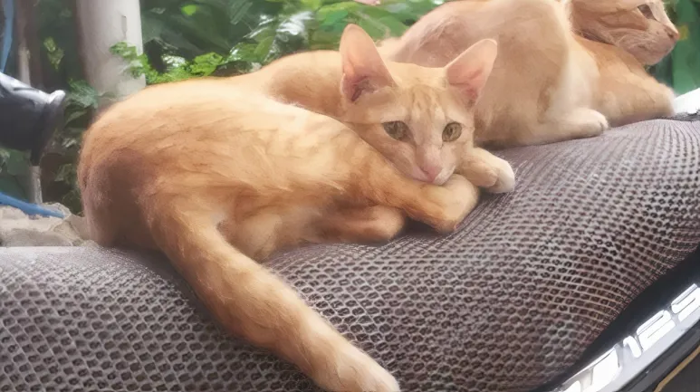
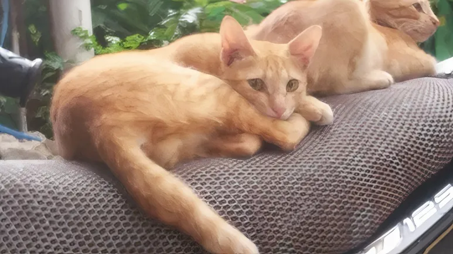

fasilitas penunjang pembelajaran praktikum sains seperti Fisika, Kimia, dan Biologi. Dilengkapi alat dan bahan percobaan, lab ini membantu siswa memahami teori secara nyata dan aman di bawah bimbingan guru.
fasilitas belajar teknologi informasi yang dilengkapi perangkat komputer dan jaringan internet. Digunakan untuk praktik mata pelajaran TIK, pemrograman, desain grafis, dan keterampilan digital lainnya.
pusat sumber belajar yang menyediakan koleksi buku pelajaran, referensi, dan bacaan umum. Berfungsi mendukung proses pembelajaran, menumbuhkan minat baca, dan meningkatkan literasi siswa dalam lingkungan yang nyaman dan tertib.

Alamat: Jl. Kenanga No. 123, RT 04/RW 02, Kelurahan Sukamaju, Kecamatan Harapan Baru,
 

Visi Sekolah
Mewujudkan generasi yang berakhlak mulia, cerdas, kreatif, dan berdaya saing global.
Misi
Sekolah
Menanamkan nilai-nilai keimanan, kedisiplinan, dan tanggung jawab dalam kehidupan
sehari-hari.
Menyelenggarakan proses pembelajaran yang aktif, inovatif, dan berpusat pada peserta
didik.
Mengembangkan potensi akademik dan non-akademik secara seimbang.
Mendorong penguasaan
teknologi informasi sebagai bekal menghadapi tantangan zaman.
Membangun lingkungan sekolah yang aman,
bersih, dan ramah anak.
Menjalin kemitraan dengan orang tua dan masyarakat dalam mendukung kemajuan
pendidikan.
 
